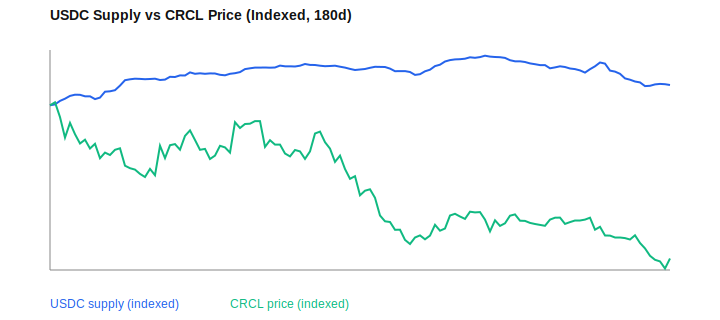
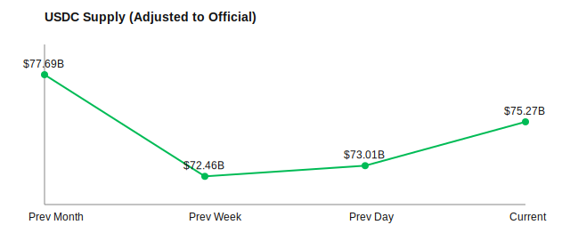

Investment Thesis
CRCL (Circle) — Investment Thesis
Circle is positioned to become the regulated utility layer of USD‑denominated stablecoin settlement. The investment case is a bet on (1) regulatory formalization of payment stablecoins in the U.S., (2) USDC scaling as a settlement rail for payments, markets, and tokenized finance, and (3) reserve‑income leverage as circulation grows. The core edge is compliance‑grade issuance paired with institutional distribution, creating a defensible moat versus unregulated or offshore competitors.
Core thesis in one line: CRCL is a regulatory‑aligned infrastructure play—if the U.S. stabilizes payment‑stablecoin rules, Circle can consolidate share as the default compliant USD settlement layer.
1) Company Origin & Strategic Evolution (Why It Matters)
Circle began as a payments/fintech company and systematically pivoted into stablecoin issuance and blockchain settlement. That path matters: it implies compliance‑first DNA rather than speculative crypto origins.
- 2013–2017: Consumer payments + crypto wallets; early banking relationships and regulatory credibility.
- 2018: Launch of USDC (via the Centre consortium) as a regulated, USD‑backed stablecoin.
- 2019–2023: Exit from consumer apps; full focus on infrastructure. USDC scaled across exchanges/wallets; Circle consolidated USDC governance.
- 2024–2025: Institutional partnerships expanded; broader chain support; public‑market listing.
Why it matters: In a regulated stablecoin world, distribution + compliance wins. Circle has oriented the company around those two constraints.
2) Coinbase Relationship (Critical Distribution + Economics)
Why it is essential: Coinbase is one of the largest distribution channels for USDC and a key strategic partner. The relationship impacts USDC circulation, market liquidity, and economics (revenue‑sharing arrangements tied to USDC activity).
- Distribution leverage: Coinbase support materially boosts USDC adoption and liquidity.
- Economic sharing: Revenue‑share structures on USDC reserves can pressure margins or stabilize distribution, depending on scale.
- Strategic alignment risk: Shifts in Coinbase incentives (or alternatives) directly affect USDC growth.
Bottom line: Coinbase is not optional context—it is a core lever in USDC’s scale and Circle’s economics.
3) Product & Platform Stack (What Circle Actually Sells)
- USDC (core asset): Regulated USD stablecoin with full reserve backing.
- Mint/Redeem infrastructure: On‑ramps for institutions to mint and redeem USDC at scale.
- Payments/Settlement network: 24/7 stablecoin settlement for B2B, fintechs, and cross‑border flows.
- Cross‑chain tooling: Interoperability (CCTP, bridging) to move USDC across chains.
- Tokenized funds (USYC) + EURC: Expansion into regulated tokenized money‑market exposure and euro‑denominated stablecoin.
Strategic implication: Circle’s stack is not just a stablecoin—it’s a regulated settlement platform with USDC as the unit of account.
4) Economic Engine (How the Business Makes Money)
Reserve income (dominant driver): USDC reserves are held in cash and short‑duration Treasuries. As circulation grows, reserve assets scale and interest income expands. Earnings sensitivity = USDC supply × rate environment.
Platform/transactional revenue (secondary): Fees from institutional mint/redeem, payments, and enterprise tooling. Lower‑margin but strategic, as it anchors distribution and increases circulation.
Distribution leverage: Large integrations reduce CAC and drive structural stickiness. Loop: more rails → higher circulation → stronger reserve economics → more rails.
IR / Filings Highlights (Public Company Data Points)
- Q2 2025 earnings press release: USDC in circulation $61.3B at quarter‑end; total revenue & reserve income $658M; reserve income $634M. Source
- Q3 2025 earnings press release: USDC in circulation $73.7B at quarter‑end; total revenue & reserve income $740M; reserve income $711M; net income $214M. Source
- FY2025 / Q4 results: scheduled announcement (Feb 25, 2026). Source
S‑1 Highlights (Core Facts From IPO Filing)
- Scale & usage (as of 3/28/2025): USDC lifetime onchain volume $25T; ~$1T minted & redeemed since founding. Source
- USDC circulation: $43.9B at Dec 31, 2024 (with ~4.3M “meaningful wallets”). Source
- Mint / redeem activity (2021–2024): ~$504.3B minted and $464.4B redeemed (one‑for‑one). Source
- Financial trajectory: Revenue & reserve income scaled from $15.4M (2020) → $84.9M (2021) → $772.0M (2022) → $1.5B (2023) → $1.7B (2024); 2024 net income $156M; Adj. EBITDA $285M. Source
- Circle Mint scale: 1,819 institutional customers (as of Dec 31, 2024); wire support in 185+ countries. Source
- Ecosystem distribution: Partnerships cited include Coinbase, Binance, Mercado Libre, Nubank, SBI, Coins.ph; liquidity partners and exchange/settlement integrations listed. Source
These points anchor the thesis in filed disclosures, not just market commentary.
5) Why CRCL (Differentiated Advantages)
- Regulatory credibility: Frameworks formalize → capital flows to issuers that clear compliance gates.
- Institutional distribution: Deep integrations create switching costs and settlement stickiness.
- Protocol leverage: USDC is increasingly a base money layer across chains and payment systems.
- Strategic optionality: Tokenized assets scale → USDC becomes settlement token.
6) Competitive Landscape (Positioning)
- USDT: Scale leader but weaker regulatory posture → policy tightening could shift share.
- Bank‑issued stablecoins: Strong distribution but slower innovation; may fragment liquidity.
- CBDC: Long‑dated and politically complex; unlikely to fully displace private rails near‑term.
Circle’s edge: “compliance‑first, institutionally distributed, programmable dollar.”
7) Catalysts (12–24 Months)
- U.S. stablecoin framework clarity (legislative/agency consolidation).
- USDC circulation inflection (sustained supply growth, especially institutional flows).
- Tokenized assets adoption (RWA/tokenized securities using USDC settlement).
- Enterprise payment adoption (B2B and cross‑border scaling).
8) Principal Risks (Non‑Negotiable)
- Regulatory delay or adverse terms (bank‑favoring frameworks, yield restrictions, capital requirements).
- Competitive pressure from USDT, bank‑issued stablecoins, or CBDC substitutes.
- On/off‑ramp dependency on legacy banking rails, limiting speed of adoption.
- Market confidence event (reserve transparency or liquidity shock) → rapid de‑peg risk.
- Partner concentration risk (e.g., Coinbase economics or distribution shifts).
9) Monitoring Dashboard (What to Track)
- USDC in circulation (official Circle report)
- Reserve composition & attestations
- Regulatory milestones (U.S. federal framework progress)
- Large‑scale partnerships (payments, exchanges, banks, enterprise)
- Tokenized assets adoption (settlement volume tied to USDC)
- Coinbase channel dynamics (volume share, economics, public statements)
Latest official supply reference: Circle’s most recent examination report (Dec‑2025) shows USDC in circulation ~75–76B range at month‑end. (Updated each report.)
USDC Supply vs CRCL (Actual Values)
We compare USDC supply (USD, left axis) against CRCL price (USD, right axis) over the last 180 days. USDC supply is adjusted to match the latest official Circle report to keep levels aligned with the audited benchmark.

USDC Supply (Adjusted Chart)
This chart uses market data adjusted to match the latest official Circle report.

10) Evidence from Latest Research Run (Signal‑Only)
- Policy discourse re‑accelerating on U.S. market‑structure and payment‑stablecoin frameworks.
- Regulators reiterating that tokenized securities remain within existing securities law, implying compliant infrastructure wins.
- Banking‑sector pushback on yield and balance‑sheet impacts remains the primary policy bottleneck.
Bottom line: CRCL is a regulatory‑aligned infrastructure play. If the U.S. stabilizes payment‑stablecoin rules, Circle can consolidate share as the default compliant USD settlement layer. The investment is therefore a wager on regulatory clarity + USDC scale, not pure crypto beta.